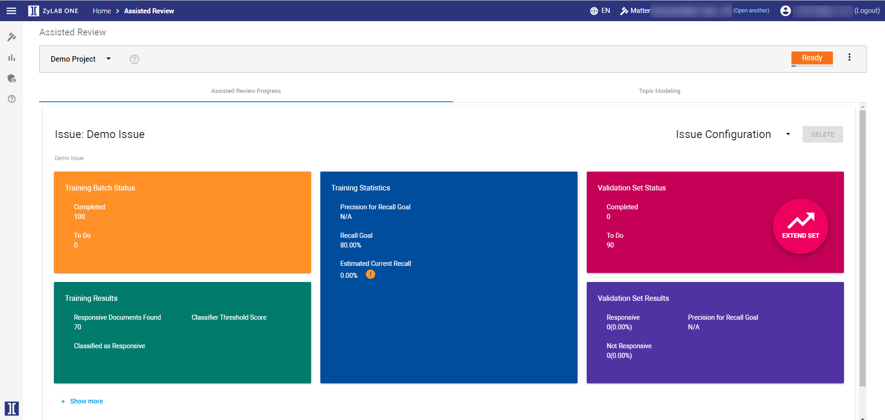

The final step is to sort through and categorize the data that is left in the ‘grey-space’, meaning data that cannot be ascertained with absolute certainty as LPP/NR or as a hot-doc. The review process is conducted by teaching the algorithm through the Technology Assisted Review (‘TAR”) system. TAR enables the researcher to conduct a software search for data that contains similar information as the tagged documents. By using TAR, you will be able to accurately identify the relevant data in order to sort it away from the grey-area of uncertainty.
Review. Train. Classify.
Assisted Review (also referred to as Technology Assisted Review or TAR) involves the interplay of humans and computers to identify responsive/relevant documents in a data set. It can, for example, be used to find more responsive documents compared to manually reviewing your collection (Intelligent Search). Or it can be used to identify (groups of) responsive documents in an unknown data set (Conceptual Search). Another option is to identify/review the most important documents first (Review Prioritization). Of course, more situations apply in which Assisted Review can be used.
Often, when using Assisted Review, only a tiny fraction of the data collection is reviewed by humans. Using the results of this human review,
the computer classifies the remaining documents in the collection.
Videos Use Cases Start a Project
